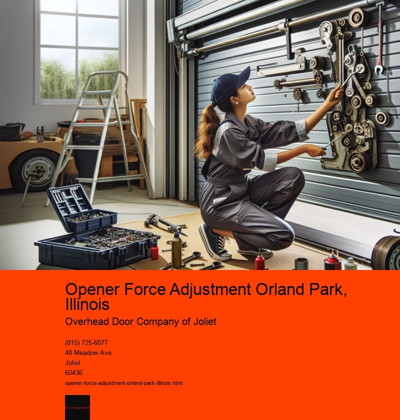

The Significance of Opener Force Adjustment in Orland Park, Illinois
In the charming suburb of Orland Park, Illinois, where the harmony of community life meets the modern conveniences of suburban living, the importance of maintaining household appliances is a priority for many residents. One such essential aspect of home maintenance that often goes unnoticed is the adjustment of garage door opener force. Although it might seem like a minor technical detail, opener force adjustment plays a crucial role in ensuring the safety and functionality of garage doors in Orland Park and beyond.
Garage doors are an integral part of most homes, serving as the primary entrance and exit for vehicles and often as a secondary point of entry into the home itself. As such, ensuring their smooth operation is vital. The opener force adjustment refers to the calibration of the force exerted by the garage door opener to lift and lower the door. This force needs to be perfectly balanced-not too strong to cause damage or injury and not too weak to prevent the door from operating efficiently.
In Orland Park, where the changing seasons bring about varying weather conditions, from the icy chills of winter to the sweltering heat of summer, the materials and mechanisms of garage doors can expand and contract. This natural response to temperature fluctuations can affect the alignment and balance of the garage door, making regular adjustments necessary to maintain optimal performance. A well-adjusted opener force ensures that the door operates smoothly, reducing the risk of wear and tear caused by excessive force or the door becoming stuck.
Safety is another critical reason for ensuring proper opener force adjustment. A garage door that exerts too much force can become a hazard, particularly in homes with children or pets. The danger of a heavy door closing unexpectedly cannot be overstated, and it is crucial for homeowners to regularly check and adjust the force settings to prevent accidents. Many modern garage door openers come with safety features such as auto-reverse mechanisms that are sensitive to resistance, but these features are only effective if the opener force is correctly calibrated.
Moreover, in a community like Orland Park, where a sense of neighborliness and mutual assistance is prevalent, ensuring that your garage door operates safely and quietly is a courtesy to those living nearby. A garage door that slams shut with excessive force can be a source of noise pollution, disrupting the peace of the neighborhood. By maintaining a properly adjusted opener force, residents can contribute to the overall tranquility and quality of life in their community.
The process of adjusting the opener force is often straightforward but should be approached with care. Many homeowners in Orland Park opt to engage professional services for this task, ensuring that it is done accurately and safely. Local technicians are well-versed in the specific needs of garage doors in the area and can provide valuable advice on maintaining them year-round. By investing in professional adjustments, homeowners can extend the lifespan of their garage doors and avoid costly repairs in the future.
In conclusion, while the task of opener force adjustment may seem like a small detail in the grand scheme of home maintenance, it is an essential practice for residents of Orland Park, Illinois. Ensuring that garage doors operate safely and efficiently not only protects the home and its occupants but also enhances the overall quality of life in the community. Regular adjustments, whether performed by the homeowner or a professional, are a proactive measure that upholds the safety, functionality, and neighborly harmony that define Orland Park.
Battery Replacement for Wireless Controllers Orland Park, Illinois
